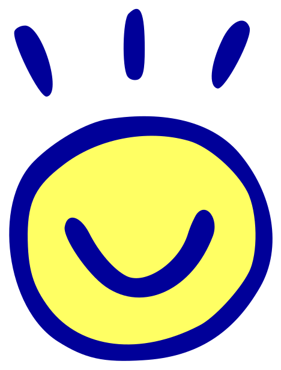
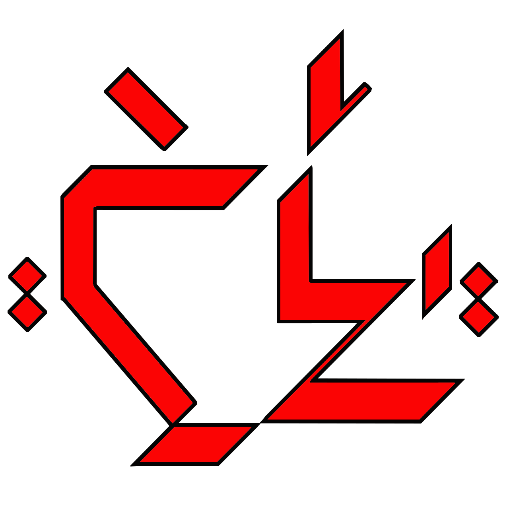
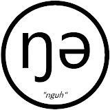
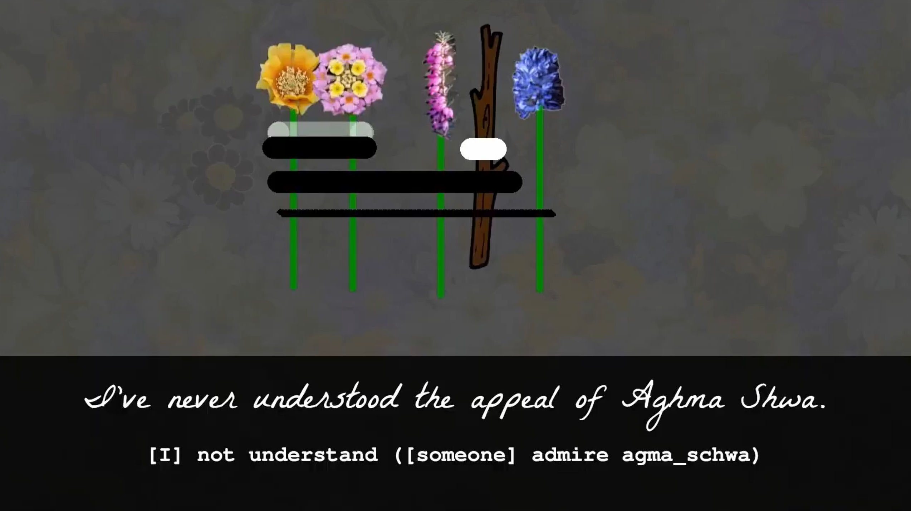

A constructed language, or conlang, is a language created by an individual or small group. Often, conlangs are created for books, shows, or movies that have a fantasy setting.
In order to make a language, there has to exist some semblance of what even is a language.
A language can encompass many different forms of communication at a level that currently only humans are capable of.
This quite intentionally a vague idea of language because many conlangs do things that no real world language ever would. Languages that evolve naturally are restricted by certain logistics that conlang creators can choose to ignore.
The purpose of a conlang can be for international communication, to explore ideas related to linguistics, or for various forms of artistic expression.
Conlangs created for international communication (called auxiliary languages, or auxlangs) typically take components from natural languages (natlangs) to create a “middle ground” for speakers of different natlangs. Sometimes auxlangs are successful, but often auxlang creators don't take enough inspiration from natlangs they're less familar with.
Other conlang creators may be interested in exploring certain features of linguistics on a deeper level. This leads to conlangs like toki pona or Ithkuil; the former attempting to use as few words as possible and the latter making every sound in a word as dense with information as possible.


What many conlang creators make is called an artlang, which itself has much variety. This category includes all the conlangs made for fantasy stories, as mentioned, as a facet of worldbuilding, as well as other projects that don't quite fit into established categories.
Agma Schwa is a conlanging & linguistics content creator on Youtube. He began his channel in 2019 with videos on his primary conlang project: Ar̃ojun.

While Agma Schwa's prior content was already reasonably popular, he really made a name for himself with his joke conlangs (jokelangs). It began in September of 2020 with his analysis of speech patterns of the Rabbids. Then, he went on to make HyperPirate (taking pirate style speech to the extreme), Gumsmaq (a language spoken while chewing food), and Santaa (based on Santa's iconic laugh).
The joke conlangs that Agma Schwa made really got to one Redditor, who in 2022 responded to Agma Schwa's final Reddit post:
I've never understood the appeal of Aghma Shwa. The first video I saw from him had him starting out by trying to gross out the viewer. Obviously, I didn't continue the video. The next one I saw had him starting out by apologizing for 'ruining your day', which I also didn't watch. I just don't get why anyone would watch a guy who makes intros like THAT. Its seriously like he's trying to be as off-putting as possible. He looks more like a troll channel to me than anything else.
This helped to shape Agma Schwa's conlang contest idea; a contest for the best, or arguably worst, cursed jokelang.
On August 28th, 2022 Agma Schwa announced a new contest; Agma Schwa's Conlang Circus. This was an opportunity for viewers to create their own cursed conlangs for the chance at prizes.
The prizes for the top 3 highest scoring conlangs were:
and the first place winner won a crumpled $100 USD bill that Agma Schwa found on the ground.
There were 3 categories that each conlang was judged on; each was scored out of 100:
*or however it is "spoken" if not using phonemes
Every submission was also required to demonstrate a spoken sample using the Reddit post, or at least a chunk of it if the sample would take too long in its entirety.
The deadline for submissions was November of 2022, giving participants 2 months to work on their cursed conlangs. By that time, many dozens of people had submitted an entry.
There was also an honourable mention of Snapdragon Rose by Tesseract King because while it was beloved by judges, they agreed it felt wrong to consider such a beautiful language "cursed" so it was exempt from scoring.

Every following year has had its installment of the Cursed Conlang Circus, as the contest has only grown in popularity. Each year has created many fan favourite submissions.
Each subsequent Cursed Conlang Circus has added new guidelines based on things that came up the previous year.